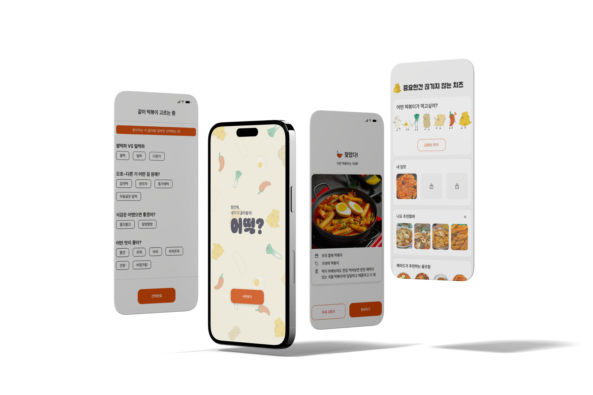
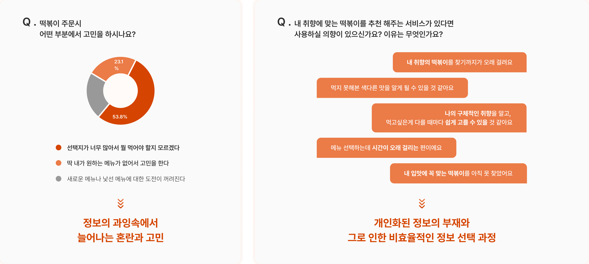
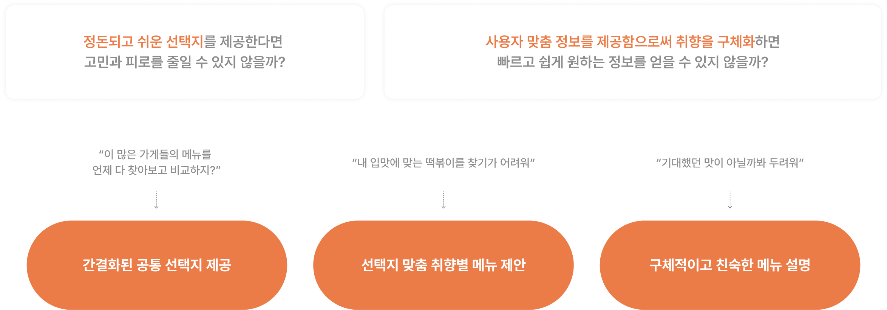
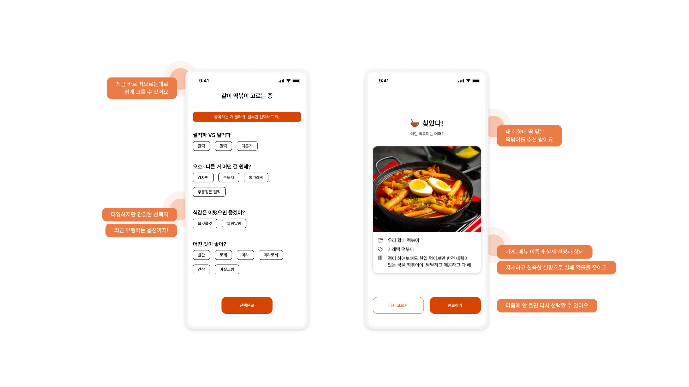
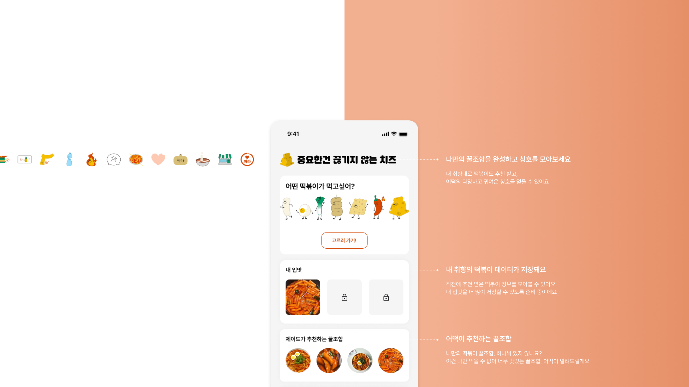
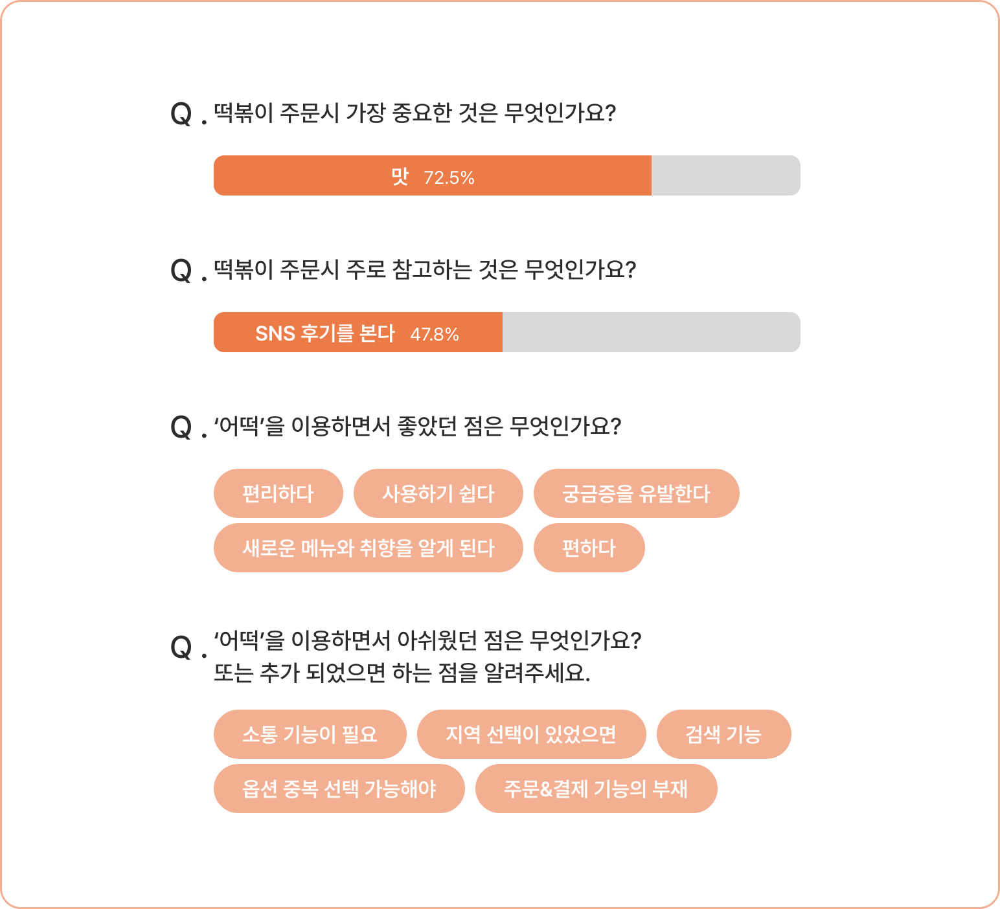
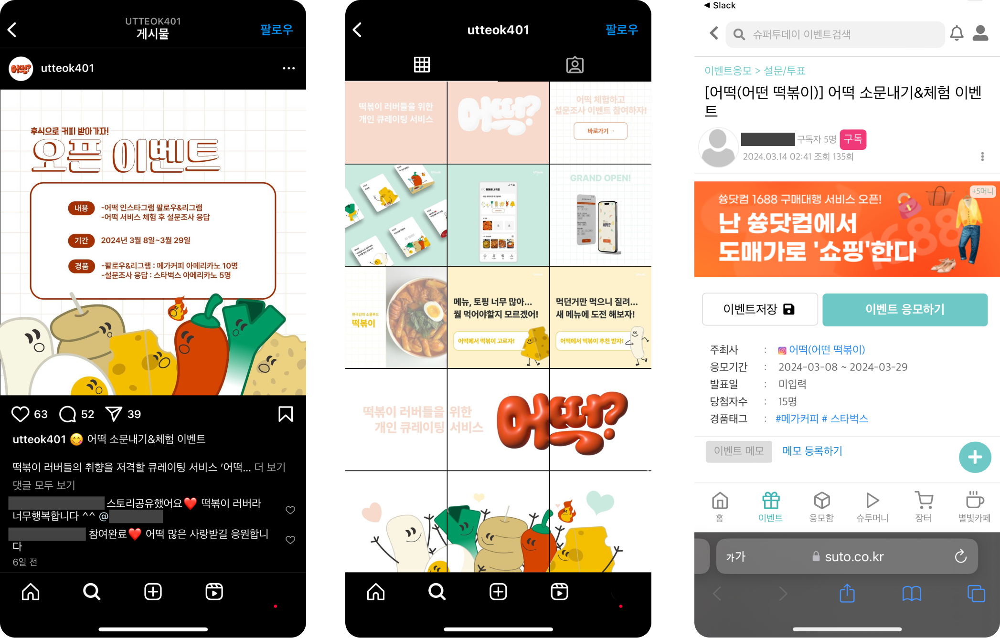

UXUI
떡볶이 취향 큐레이팅 서비스 ‘어떡?’
수많은 떡볶이 메뉴 속에서 어떤 것을 먹을지 고르지 못하는 떡볶이 러버들을 위한
초개인화 떡볶이 큐레이팅 서비스입니다.
2024.01.26 - 02.04
포텐데이 팀 프로젝트(기획, FE, BE, 디자인) 중 디자인 100%

Background
떡볶이는 대한민국의 국민 간식이라고 불리는 만큼 인기가 좋지만, 쏟아지는 정보들 속에서 혼란을 느낀 적이 많았습니다. 어느 브랜드가 맛있는지, 그 중에서 어떤 메뉴가 내 입맛에 맞는지 알기도 전에 그냥 대충 집에서 만들게 되는 경우가 많았습니다. 이런 혼란과 피로를 줄일 수 있는 서비스를 만들고 싶었습니다. 옛날부터 꾸준히 사랑받은 간식이긴 하지만 로제, 마라 등의 젊은 세대들 입맛에도 잘 맞춰가는 음식이기 때문에 최근 트렌드 경향과 함께 배달의 민족 등 배달앱 메뉴 현황, 블로그 리뷰 등을 살피며 떡볶이 소비 행태를 파악했습니다.
Research
실제로 떡볶이를 즐겨 먹는 사람들의 의견을 듣고자 설문조사를 시행했고, 떡볶이를 주문할 때 겪는 문제점과, 떡볶이 추천 서비스에 대한 의견을 통해 니즈를 파악할 수 있었습니다.

Problem & Solution
앞서 조사한 것들에서 공통적으로 해결하고자 하는 부분과 그에 대한 해결방법을 도출했습니다.

Main features
사용자가 현재 생각나는대로 선택지를 선택하면, 그에 맞는 정보가 등장합니다. 선택지에 맞는 브랜드, 메뉴, 간결하지만 핵심 요소를 설명한 상세 스크립트를 보고 사용자는 처음 보는 브랜드와 메뉴도 거부감 없이 받아들일 수 있습니다.

국민간식이라는 타이틀에 맞게 서비스 컨셉을 전체적으로 친근함이라는 키워드에 맞춰 디자인했습니다. 개인화 서비스인만큼 이전에 도출된 취향정보가 저장되고, 운영진 측에서도 메뉴 추천을 해주며 나름의 큐레이팅까지 제공됩니다.또한 서비스의 컨셉에 맞춰 리텐션까지 유지되게끔 '칭호 얻기' 같은 작은 게이미피케이션 요소를 넣었습니다.

Results
해커톤에서 주어진 열흘만에 성공적으로 런칭을 한 후, 실제 사용자들의 의견을 듣기 위해 실사용자에게 설문조사를 요청했습니다.이 과정에서 인스타 채널운영, 광고 과정을 경험해보았고 서비스 고도화를 위한 의견 또한 들을 수 있었습니다.서비스 전반적으로 핵심기능은 마음에 들지만, 소셜 커뮤니케이션 기능이나 주문 기능 등의 고도화가 필요하다는 의견이 대부분이었습니다. 떡볶이 전용 배달앱이지만 큐레이팅을 제공하고, 사람들 저마다의 입맛까지 엿볼수 있는 구조의 서비스가 된다면 큰 수요가 있을 것으로 보인다는 결과를 얻었습니다.


Retrospective
다양한 직군의 팀원들과 함께 하며 더욱 효율적으로 소통할 수 있는 방법을 배우게 되었습니다. 각 포지션마다 주어진 업무를 끝내는 것이 결과적으로는 가장 중요하겠지만, 그 업무 진행을 위해 서로 세심하게 과정을 공유하고 맞춰나가는 것에 대한 중요성도 깨달았습니다. 또한 UIUX뿐만 아니라 일러스트레이션, 콘텐츠 디자인 등 디자인 전반에 대한 다양한 경험을 할 수 있었습니다.